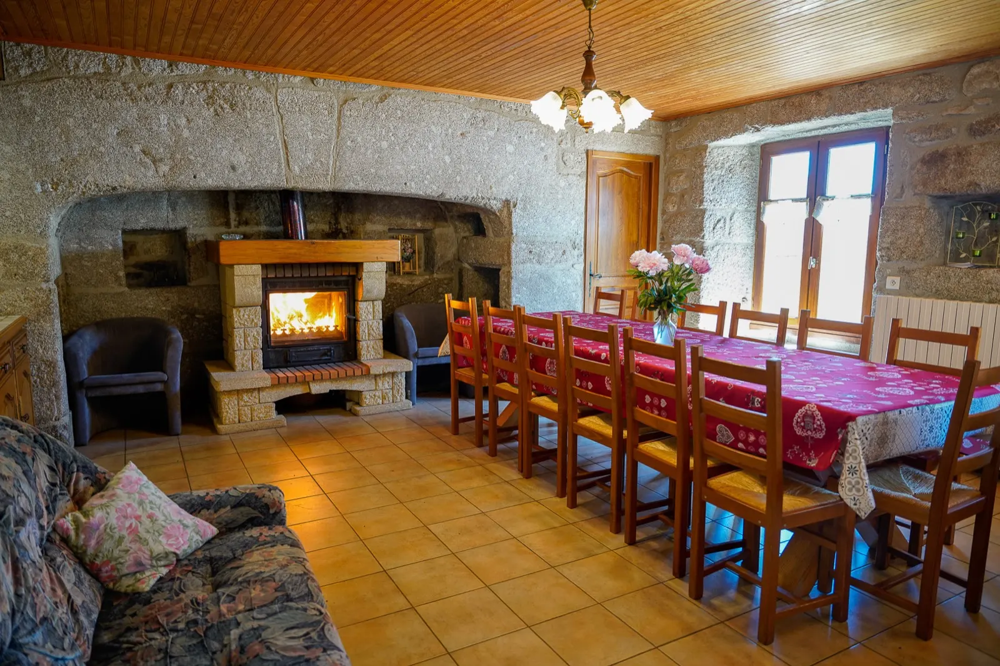
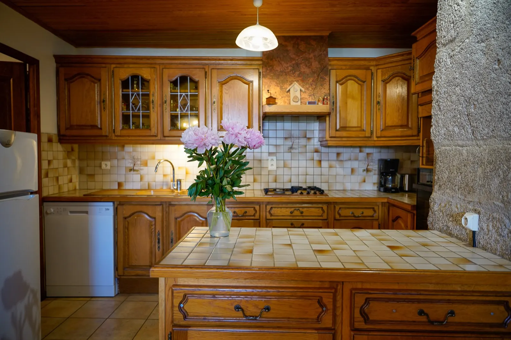

Gîte « la Margeride »
13 personnes140 m²Animaux acceptés
L'ancienne maison d'habitation de la ferme, pour les groupes jusqu'à 13 personnes. Au rez-de-chaussée, une grande pièce à vivre où chacun évolue sans encombre, et une cuisine toute équipée.
- Cheminée, le bois vous est fourni gratuitement
- Grande terrasse, salon de jardin, transats et barbecue
- Pelouse fermée et sécurisée